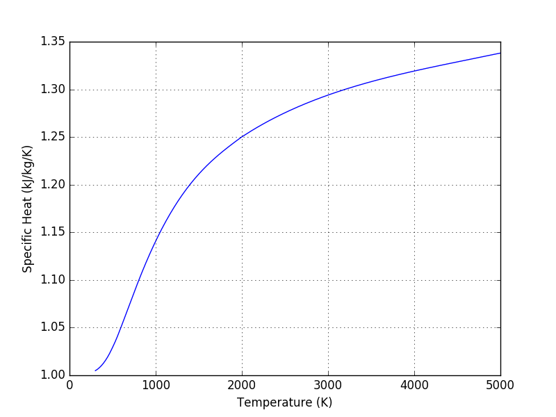

PYroMat
Thermodynamic Properties
in Python
Access properties of
nearly 1,000 substances
in only a few lines of Python
nearly 1,000 substances
in only a few lines of Python
>>> import pyromat as pm
>>> H2O = pm.get('mp.H2O')
>>> h = H2O.h(T=450., p=3.)
Simple, accurate, and versatile
Great for teaching
Great for research and design
Great for teaching
Great for research and design
PYroMat's array support
makes plotting
and working with big data sets
easy.
makes plotting
and working with big data sets
easy.
>>> import numpy as np
>>> O2 = pm.get('ig.O2')
>>> import numpy as np
>>> T = np.linspace(300.,2000.,101)
>>> h = O2.h(T)
>>> h.shape
(101,)
>>> p = np.linspace(1.,100.,101)
>>> s = O2.s(T,p)
>>> s.shape
(101,)
>>> T = T.reshape((T.size,1))
>>> s = O2.s(T,p)
>>> s.shape
(101, 101)
>>> import matplotlib.pyplot as plt
>>> T = np.linspace(300.,5000.,201)
>>> air = pm.get('ig.air')
>>> plt.plot(T, air.cp(T))

Authored By:
Christopher R. Martin, Ph.D.
Associate Professor of Mechanical Engineering
The Pennsylvania State University, Altoona College
crm28@psu.edu
©2021 Released under the GPLv3 License